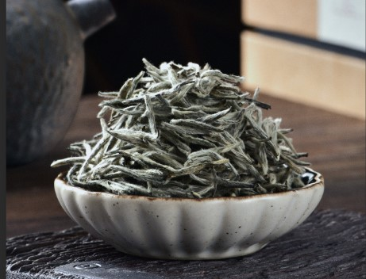
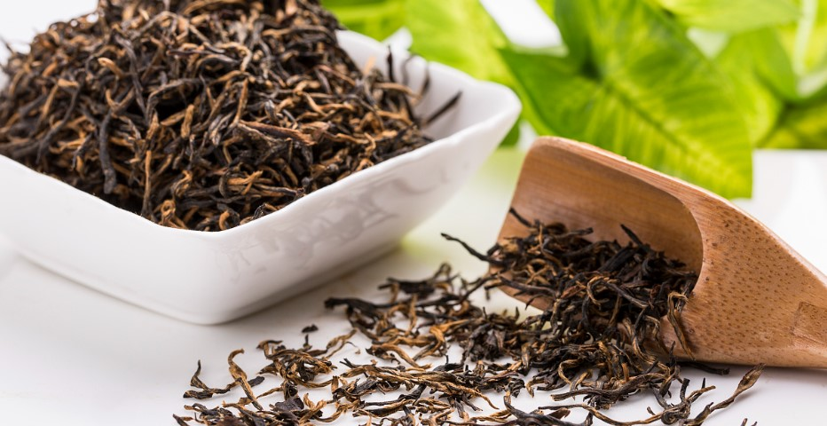

福鼎白茶
福鼎白茶就是用产自福鼎“华茶1号”或“华茶2号”茶树的芽叶，不炒不揉，特殊工艺制作而成，其外形芽毫完整，汤色杏黄清澈，滋味清淡、清甜爽口的品质特点。根据采摘芽叶的不同，白茶可分为：白毫银针、白牡丹、寿眉、新工艺白茶等，近年来，根据市场需要又推出紧压白茶等
功效
白茶的自由基含量最低，黄酮含量最高，氨基酸含量平均值高于其他茶类。而且福鼎白茶具有清热祛火的功效，白茶提取物对引起葡萄球菌感染、链球菌感染、肺炎等细菌生长具有预防作用。
茶树形态
福鼎大白茶树高1.5—2米，幅宽1.6—2米，树势半开张，为小乔木型。分枝较密，节间尚长。树皮灰色。叶椭圆形，先端渐尖并略下垂，基部稍钝，叶缘略向上。通常大12×5.4厘米，长宽比平均为2.2。叶色黄绿、具光泽。侧脉明显，7—11对。锯齿较整齐、明显，27—38对。叶肉略厚，尚软。
一芽二叶长5.1厘米，百芽重23克。花型较大，雄蕊低于雌蕊，盛花期10月下旬至11月中旬，花量多，结果率高，茶子大而饱满。发芽期在3月上旬，11月中旬停止生长。生长期全年达8个月。
生长势旺盛，抗逆性强，耐旱亦耐寒，虽在零下3—4℃或更低亦不受冻。繁殖力强，压条、扦插发根容易，成活率高达95%以上。产量比当地菜茶高。制成红茶、绿茶、白茶品质均佳。采制银针以芽洁白肥壮、茸毛多最为特色。
产地环境
福鼎市位于福建省东北部，地处闽浙交界的东海之滨。地理坐标介于北纬26°52′~27°26′，东经119°55′~120°43′之间。地势是西北高，东南低，地势呈东北、西北、西南向中部和东南沿海波状倾斜。除滨海一带有少数的低山、平地外，大多海拔在500-800米，乃至1000米以上。东西宽79.3公里，南北长57.4公里，海岸线长；陆地面积1461.7平方公里，海域面积14959.7平方公里，山丘地约占陆地总面积的91%，盆谷平原约占9%。
气候条件属中亚热带季风气候区，海洋性气候特征明显，年平均温度18.5℃，年降雨量1669.5毫米，年相对湿度80%，山区平均无霜期228天。土壤有红壤、黄壤、紫色土和冲积土，PH值在4-6.3之间，普遍在5.0左右，质地为壤粘土，有机质含量高达1.58-2.33%。域内除沿海地带的土质，大部分的土壤适合茶树生长。
产地环境
唐代陆羽著的《茶经》引用隋代的《永嘉图经》：“永嘉县东三百里有白茶山”。据陈椽、张天福等茶业专家考证，白茶山就是太姥山。说明早在隋唐，白茶就已出现。
2009年考古工作者在宋代吕氏家族墓的发掘中，发现了铜质渣斗里有30多枚极品白茶芽头，据专家推断，这些距今1000多年前的茶叶来源于福建福鼎。
明代田艺蘅《煮泉小品》中记载：“茶者以火作者为次，生晒者为上，亦近自然，且断火气耳。况作人手器不洁，火候失宜，皆能损其香色也。生晒茶沦于瓯中，则旗枪舒畅，清翠鲜明，尤为可爱。”田艺蘅所述的，正是白毫银针的制法——生晒，制作禁忌不用手直接接触茶叶，制作的功力不足茶叶的香气就会受损，白毫银针泡在瓯中，条条银针直立，汤色鲜明。
明末清初周亮工莅临太姥山，为福鼎大白茶母茶树题诗：“太姥山高绿雪芽，洞天新泛海天槎。茗禅过岭全平等，义酒还教伴义茶。”现鸿雪洞中留有摩崖石刻。
国外的科研机构早就对白茶的保健功效进行研究。原全国政协委员、国家茶叶质量监督检测中心原主任骆少君研究员说：福鼎白茶是“墙内开花墙外香”一族。原福建省茶叶协会秘书长陈金水说：晚清以来，北京同仁堂每年购50斤陈年白茶用以配药。在计划经济的时候，国家每年都要向福建省茶叶部门调拨白茶给国家医药总公司做药引（配伍），配制成非常高级的药。
进入21世纪，白茶得到英国凯特王妃的喜好，2009年英国王子世纪婚礼的结婚纪念茶就是用福鼎白茶配制而成。